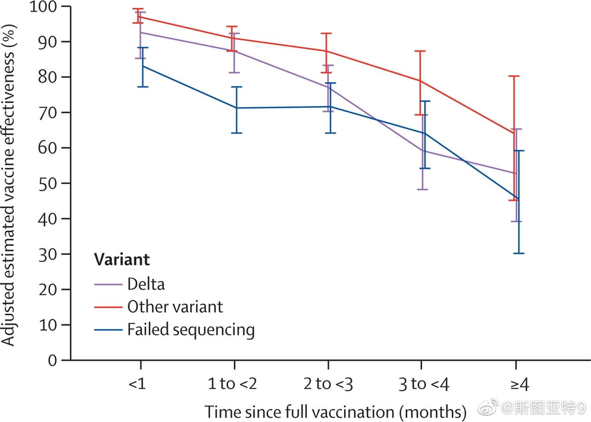
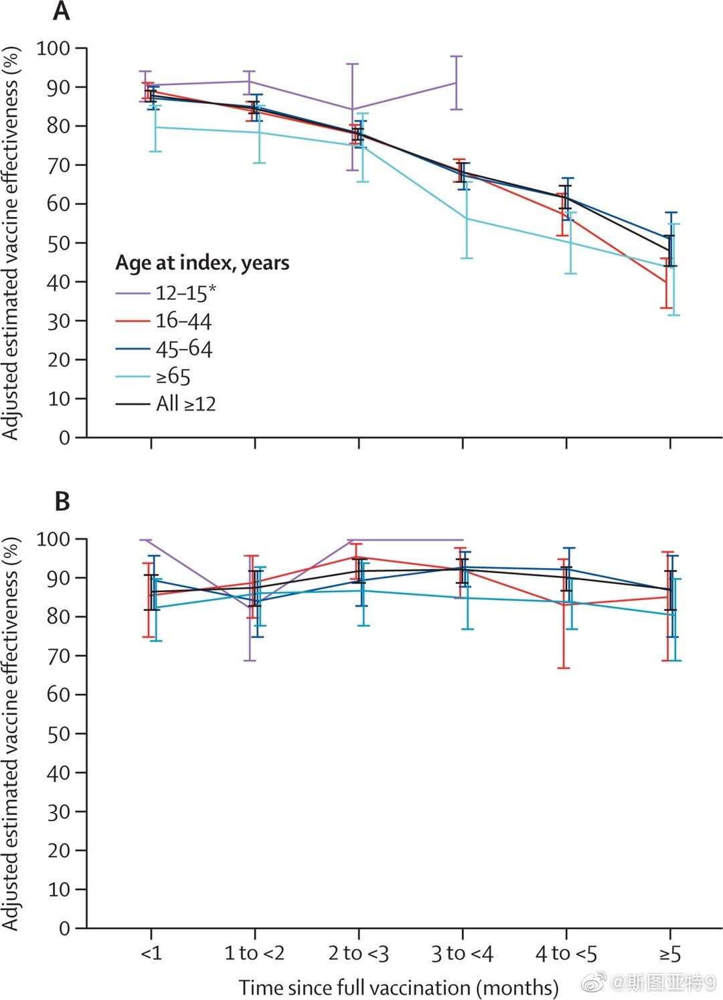

柳叶刀发表的南加州Kaiser医院的辉瑞疫苗免疫衰退的文章： 网页链接 他们没有用test negative分析，用的似乎还是测试阳性的数据统计。使用的是挺复杂的统计方法。总之了，结果就是这两张图。疫苗对于防住院的保护力变化不大，但防感染的有效性衰退比较迅速，四个月后就只剩一半左右。话说他们有这么多数据为什么不用test negative分析，说留作“future work”？搞不懂。
 卡帅：我解约时放弃了1.79亿元工资和奖金
卡帅：我解约时放弃了1.79亿元工资和奖金